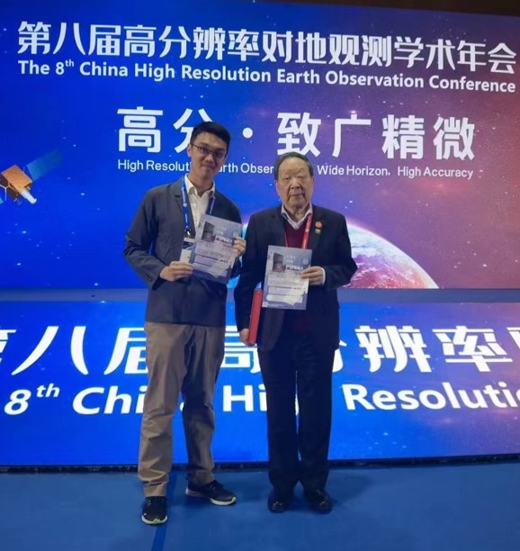
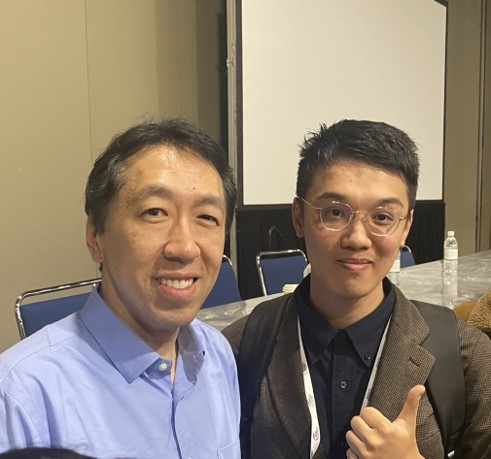
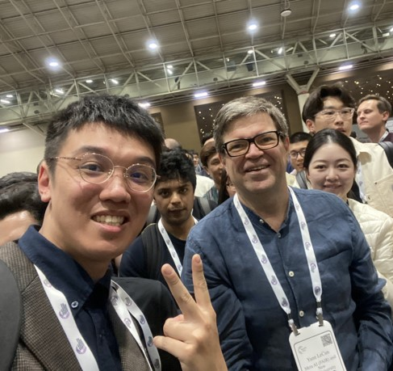
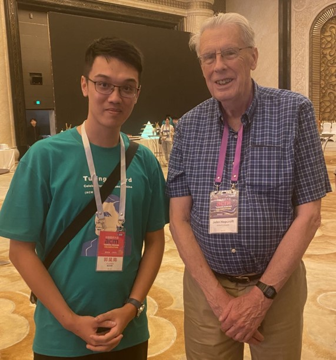
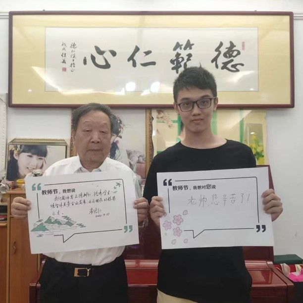
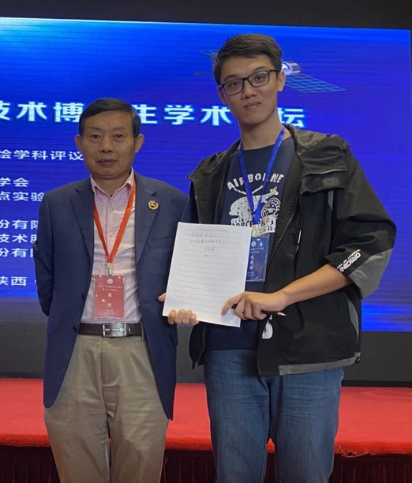
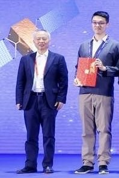

I am currently a PhD student at State Key Laboratory of Information Engineering in Surveying, Mapping and Remote Sensing of Wuhan University, supervised by Prof. Liangpei Zhang, Bo Du, Xin Su, Chen Wu, Qian Shi.
I'm interested in AI algorithms for Remote Sensing Image Interpretation. AI+RS+SDGs= Our future!
· RS ChatGPT · Foundation model · Large-scale mapping · Change detection
Email / Google Scholar / ResearchGate / Github
Vice Chair-IEEE GRSS Wuhan Student Branch / Intern-Geo-spatial Information Science
East Asia Coordinator-IEEE GRSS Young Professionals Community
· 04/2024, I am funded by NSFC to perside over the Fundamental Research Project for Young Professional !
我获得国家自然科学基金委 首批青年学生基础研究项目资助！[报导链接]
· 04/2024, a review of China's Earth Observation System is published on GSIS, co-authored with Prof. Deren Li !
· 04/2024, Remote Sensing ChatGPT is selected as one of the 10 Student Paper Competition finalists at IGARSS ! Many thanks for my advisors Prof. Liangpei Zhang, Bo Du, Xin Su, Chen Wu and Deren Li !
· 03/2024, happy to hold IEEE GRSS China Student Chapter Meeting 2024, a nice weekend with student chairs !
· 02/2024, I will serve as the East Asia Coordinator of IEEE GRSS Young Professionals(YP), happy to be a part of IEEE GRSS YP team!
· 01/2024, Warm welcome to Prof. Jianbing Peng for visiting Wuhan!
· 01/2024, Remote Sensing ChatGPT is submitted to IGARSS2024! See you in Greece!
· 01/2024, Similarity-aware Attention Flow Network for Change Detection, is accepted by IEEE TIP.
· 01/2024, Happy to be recommended to submit a proposal to NSFC! Good Luck!
· 01/2024, My honor to take part in the 2024 IEEE GRSS China Chapter Strategical Planning Session!
· 01/2024, Warm welcome to Prof. Alexander Zipf for visiting China!
· 12/2023, I take part in NeurIPS 2023 in New Orleans. A nice selfie with Prof. Andrew Ng and Yann LeCun!!
· 11/2023, I am awarded the Excellent Editorial Intern of GSIS.
· 09/2023, Our Lightweight Building Extraction Decoder, BF-Seg, is shared on arXiv.
· 07/2023, Our Multitask Learning Framework, CRIN, is shared on arXiv.
· 07/2023, Our Metric learning-based loss for Change Detection, DeepCL, is shared on arXiv.
· 06/2023, Our Edge and Semantic Decoupled Network is accepted by IEEE TGRS.
· 05/2023, Our Building Footprint Update Network, published on RSE, is now an ESI hot paper!
· 03/2023, Our Boundary Refinement Network, published on ISPRS P&RS, is now an ESI highly cited paper!
· 03/2023, We are the Champion in Gaofen Challenge on Automated High-Resolution Earth Observation Image Interpretation, Hooray!!!
· 01/2023, Our Scene-driven Building Extraction Network, published on IEEE TGRS, is now an ESI highly cited paper!
· 09/2020, I received my bachelor degree at Sun Yat-sen University (GPA:3.9/4.0, top 5%), advised by Prof. Qian Shi.
Nice Shots
   
  
AI+Remote Sensing suffers from poor performance due to the Lack of Prior Knowledge. l have developed several prior knowledge-guided methods for multiple tasks(e.g.building mapping, change detection).
Currently, I am working on the Remote Sensing ChatGPT project, developing an intelligent system for one-stop remote sensing image interpretation.
Paper(IGARSS) | Project Page | Blog | Zhihu
The potential of LLM in handling remote sensing interpretation has not yet been explored. Remote Sensing ChatGPT is an LLM-powered agent that utilizes ChatGPT to connect various AI models and solve complicated interpretation tasks. Users can simply send a remote sensing image with the corresponding request, and get the interpretation results as well as language feedback from Remote Sensing ChatGPT.
I would like to say, DeepCL is super simple and effective! We complement the strong temporal modeling ability of metric learning with the prominent fitting ability of segmentation and propose a deep change feature learning (DeepCL) framework for robust and explainable CD. It is super simple in implementation and is effective!
Existing building contour databases need to be updated regularly to ensure their validity. We developed a novel algorithm to automatically update the existing building databases to their current status with minimal manual intervention. It is a promising approach for producing up-to-date building footprints in practical applications.(ESI HOT Paper,ESI Highly-cited Paper)
I'm interested in developing simple but effective models for remote sensing interpretation(e.g. segmentation and change detection) using geographical knowledge prior.